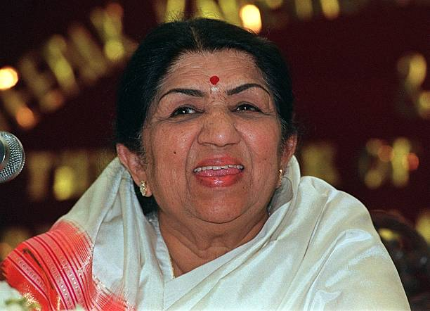

Lata Mangeshkar Ji
Singer

Lata Mangeshkar (1929 - 2022)
A Short biography of Lata Mangeskar
Born September 28, 1929 in Indore, Indore State, Central India Agency, British India
Died February 6, 2022 in Mumbai, Maharashtra, India (complications from COVID-19)
Mini Bio--
Lata Mangeshkar was born in Indore on September 28, 1929, and became, quite simply, the most popular playback singer in Bollywood's history. She sung for over 50 years for actresses from Nargis to Preity Zinta, as well as recorded albums of all kinds (ghazals, pop, etc).
If you have time, You should read more about lata mangeskar ji imdb.com